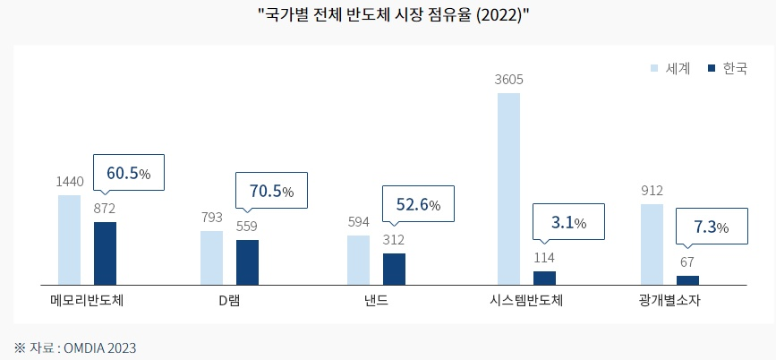
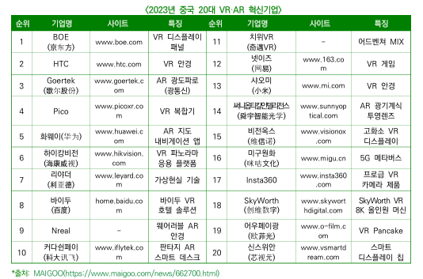

한중국의 전자기기
한국 전자기기 (반도체, 티비, 핸드폰)
반도체는 ‘80년대 이후 PC, 스마트폰 등에 핵심부품으로 투입되며 지속 성장해 왔고,
2022년 글로벌 반도체시장은 6,040억불을 기록하였다.
이 중 한국의 글로벌 반도체 시장점유율은 17.7%로 2013년 이후 10년간 세계 2위 자리를 지속하여 지키고 있다.
특히 전 세계 메모리 반도체 시장의 60.5%를 차지하였으며, DRAM 70.5%, NAND는 52.6%를 점유하고 있다.
2022년 국내 반도체 총 수출은 1,292억 달러이며, 이 중 메모리반도체가 738억 달러로서
전체 반도체 수출액의 57.46%를 차지한다.
또한 반도체는 한국 최대 수출품목으로서 2022년 기준 한국 전체 수출의 18.9% 비중을 차지하며 한국 경제와 산업을 선도하고 있다.
한국은 중국, 대만에 이어 3번째로 큰 반도체 제조시설을 갖추고 있으며, 세계 반도체 전체 Capa의 약 17.9%를 차지하고 있다.
이렇게 규모 있는 반도체 제조시설을 통해 한국은 현재 대만, 중국과 함께 세계에서 반도체 설비투자가 가장 활발한 나라로
거대한 반도체 장비/소재 시장을 형성하고 있다.
출처: 인베스트 코리아 - 반도체(링크)
신종 코로나바이러스 감염증(코로나19)에 따른 '집콕' 수요 증가로 국내 TV 시장이 2조7천억원 규모로 2019년에 비해 23% 성장했다.
글로벌 시장 정보 기업 GfK는 지난해 국내 TV 시장은 2019년과 비교해 23% 성장한 2조7천억원 규모였으며,
올 1분기에도 지난해와 비교해 21% 성장한 7천400억원의 규모를 기록했다고 밝혔다.
출처: ZDNET Korea 2021년 국내 TV 시장 성장(링크)
시장조사기관 옴디아에 따르면 지난해 출고가 2500달러(약 330만 원) 이상 TV의 글로벌 시장에서
삼성전자(60.5%)와 LG전자(19.1%)가 각각 1, 2위를 기록하며 한국의 매출 점유율은 79.6%까지 상승한 것으로 집계됐다.
OLED 시장에서도 처음으로 한국 TV 비중이 70%를 넘어섰다.
지난해 제조사별 OLED TV 글로벌 매출 점유율은 LG전자 48.0%, 삼성전자 22.7%로 나타났다.
다만 출하량 점유율은 중국 업체들의 물량 공세에 밀려 하락세를 이어가고 있다.
옴디아에 따르면 지난해 LG전자의 TV 출하량 점유율은 11.2%로 TCL(12.5%)과 하이센스(11.4%)보다 낮아 4위로 내려앉았다.
출처: '월클' 한국 프리미엄TV 점유율 80% 육박(링크)
2023년 국내 스마트폰 시장은 경제 불확실성 가중 및 전반적인 소비자 심리 지수의 회복과 하락 반복으로 인해
시장은 감소세를 이어갔지만 그 정도가 둔화되는 양상을 보였다.
가격대 별로는 800달러(USD)이상 (약 110만원)의 플래그십 제품군의 점유율이 14.1%p 크게 증가한 64.4%를 기록하였다.
주요 제조사의 플래그십 제품군 중심의 판매 전략 및 제품 가격 상승이 점유율 증가의 주 원인으로 분석됐다.
출처: 한국 IDC, 2023년 국내 스마트폰 시장 1,357만대 출하..(링크)
2024년 1분기 글로벌 스마트폰 시장은 전년 동기 대비 6% 성장하여 약 2억 9,690만대 출하량을 기록했다.
삼성은 애플을 제치고 글로벌 1위 스마트폰 기업 자리를 차지하였으며, 출하량 5,940만대로 점유율 20%를 기록하였고,
애플의 출하량은 전년 동기 대비 13% 감소하였으나 프로 모델 성능 향상으로 해당 브랜드의 ASP는 1분기 최고 기록을 경신.
전세계 아이폰 출하량은 약 5,060만대를 기록했다.
출처: 글로벌 스마트폰 점유율:분기별 데이터(2022-2024년)(링크)
중국의 전자기기
중국에서는 5월 24일, 제 7회 디지털 중국 건설 정상회의가 성공적으로 개최되었다.
이날 간담회에서는 인스퍼 인텔리전트 터미널 회장이 기조연설을 통해 인스퍼 인텔리전트 마이크로 윈도우,
인텔리전트 충전 파일, 엘리베이터 네트워킹, 모바일 스마트 스크린 등 4가지 신제품을 공개하였다.
이러한 정보들을 통해서 현재 중국에서도 많은 신제품 전자기기들을 제작, 홍보하는 중이다.
중국의 VR/AR 산업 투자는 2021년부터 2026년까지 연평균 43.7%씩 증가할 것으로 예상되며,
시장 규모는 최근(2018~2022년) 연평균 43.8%씩 증가하였다.
VR/AR 산업에 대한 투자는 2023년 456억 위안에서 2026년 879억 위안에 달할 전망이며,
시장 규모는 2018년 185억 위안에서 2023년 920억 위안으로 급성장할 전망으로 보인다.
중국의 VR/AR 콘텐츠 및 서비스 시장 규모는 2017년 11억 위안에서 2022년 357억 위안으로
연평균 118%씩 성장, 2023년 450억 위안으로 예상된다.
VR/AR 응용은 소비 및 엔터테인먼트 분야에서 산업, 의료, 교육 등 분야로 확대, 2021년 VR/AR
콘텐츠 응용 비중은 업종별로 엔터테인먼트, 교육, 라이브 방송, 부동산, 헬스케어, 제조업, 문화 등이 순이다.

VR/AR 혁신기업에는 BOE, 화웨이, 바이두, 샤오미 등 중국의 주요 IT 기업들이 포함되있다.
(출처: 치이나 마켓 리포트, 한국무역협회 베이징지부)
Lotu Technology(RUNTO)의 온라인 모니터링 데이터에 따르면 2024년 1분기에 스마트 프로젝션,
스마트 TV, 모바일 스마트 스크린, 스마트 태블릿, 스마트 스피커, 사운드 바, 스마트 박스, XR 및
기타 제품을 포함한 중국 거실의 스마트 기기 총 소매 수량은 1,706만 대로 전년 동기 대비 8.9% 증가할 것이다
총 소매판매액은 253억 위안으로 전년 동기 대비 7.7% 증가했다. 이러한 통계들은 올해 1분기에 중국의 거시 경제와
시장 소비가 회복되었으며, 스마트 장치의 시장 성과가 좋아지고 있다는 것이 보여진다.
출처: 중국내 스마트 장치 데이터 요약 보고서(링크)
CPU는 인간의 "두뇌"처럼 다양한 구성 요소의 작동을 지시하는 것처럼 컴퓨터의 핵심부품이다.
2023년 11월 28일, 중국이 자체 개발한 차세대 범용 CPU인 Loongson3A6000이 베이징에서 공식 출시되었습니다.
이는 국내 CPU가 독립적인 제어 가능성과 제품 성능 측면에서 새로운 정점에 도달했음을 의미하며
중국이 자체 개발한 CPU 아키텍처에서 일류 제품을 만들 수 있는 능력이 있음을 증명한다고 말했다.
출처: 새로운 세대의 국산 CPU가 온다(링크)